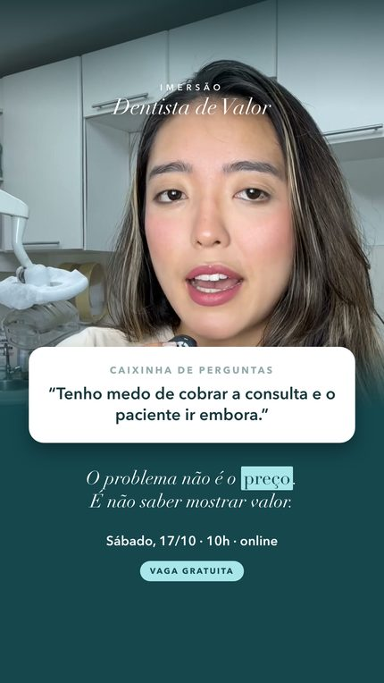
Todas partem do que já está no ar: os vídeos gravados no consultório. As fotos são frames desses próprios vídeos — mesma Giuliana, mesmo cenário, nenhuma imagem de banco — e a identidade da imersão (papel, petróleo e o verde-água) está mantida peça a peça.
O conteúdo que mais engaja hoje é a Giuliana respondendo uma pergunta real da caixinha — a do medo de cobrar a consulta e perder o paciente. Essa linha leva esse mesmo formato para a arte parada: cada peça traz uma dúvida diferente que as dentistas mandam, com a resposta curta logo abaixo e o rosto dela em destaque no topo.
Existe uma oportunidade real de você viver bem da odontologia, sem depender de convênio nem trabalhar pro consultório de outra pessoa. E ela começa com um mapa claro do que fazer. 🗺️💰 Quer saber como chegar lá? Eu te mostro, passo a passo, na Imersão Dentista de Valor, dia 17 de outubro, às 10h 🚨 Toque agora em “Saiba Mais” e garanta sua vaga gratuita!
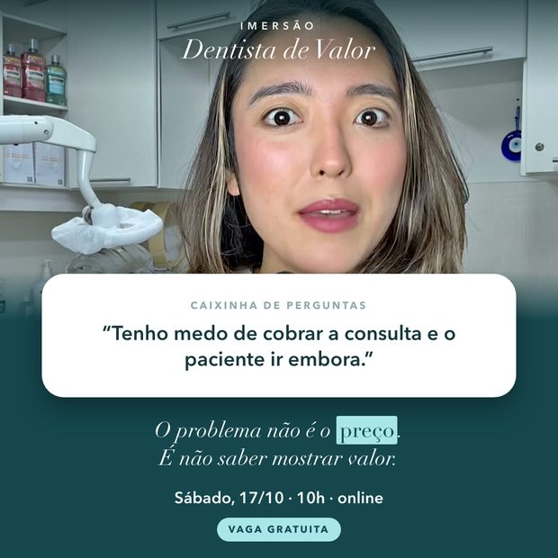

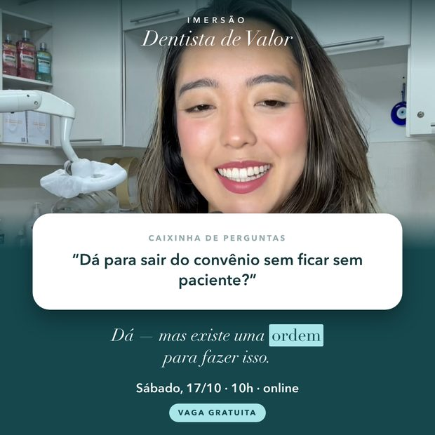
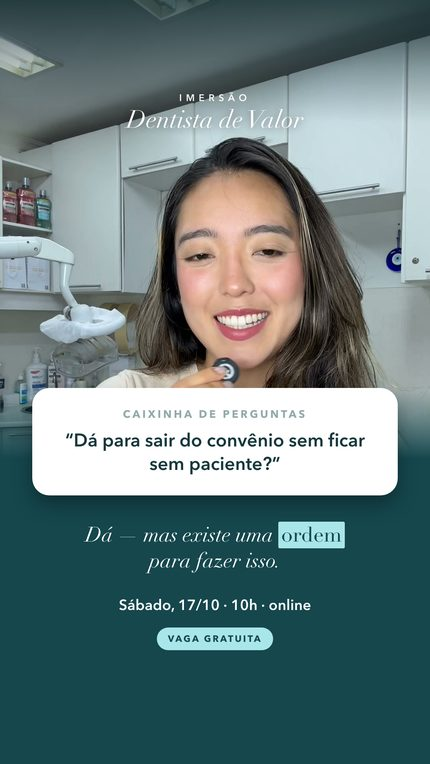
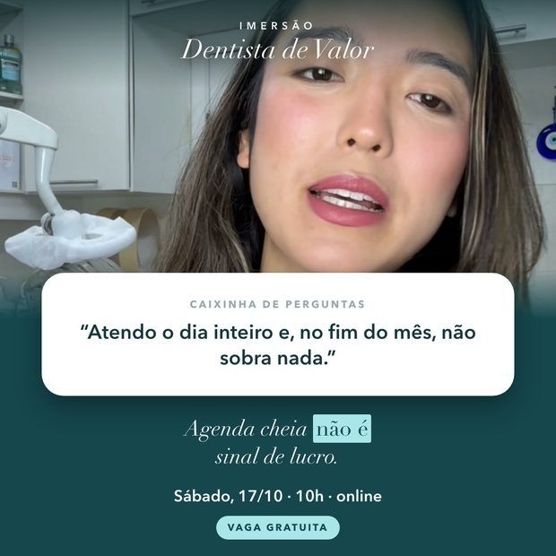
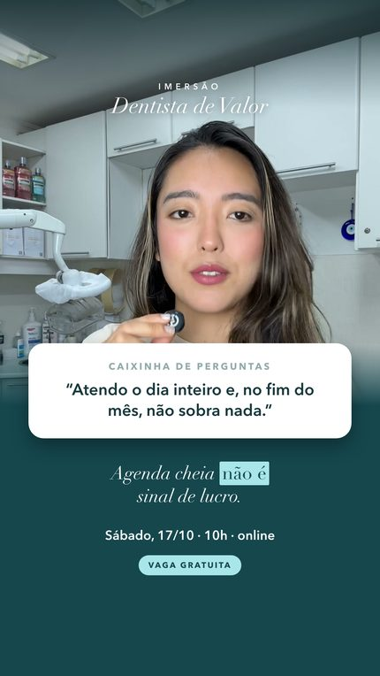
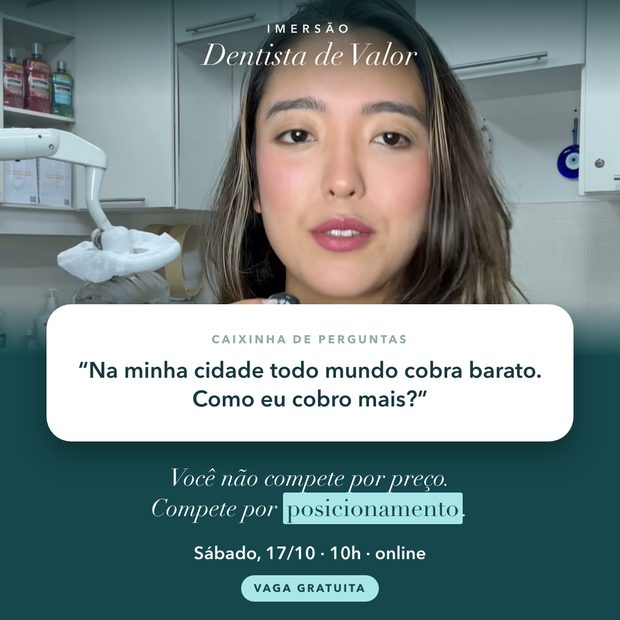
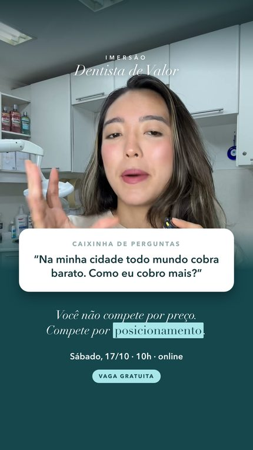
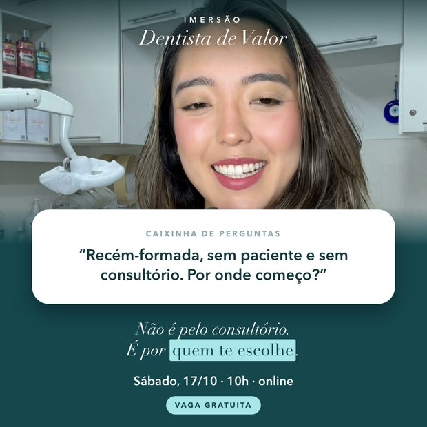
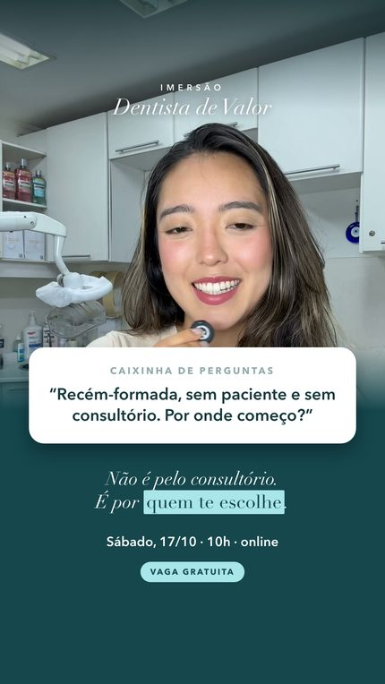
A moldura de papel sobre o petróleo que já é da imersão, agora com uma pergunta grande e uma única linha de apoio. No feed a leitura acontece em um segundo: quanto menos texto a peça pede, mais gente chega até o convite.
Existe sim, um caminho para você ganhar o que merece e construir uma carreira rentável na odontologia, seja com consultório próprio, atuação híbrida ou espaço alugado 📌 Você tem um compromisso marcado comigo no dia 17 de outubro, às 10 horas, na Imersão Dentista de Valor. 🚨 Toque AGORA em “Saiba Mais” e se inscreva!
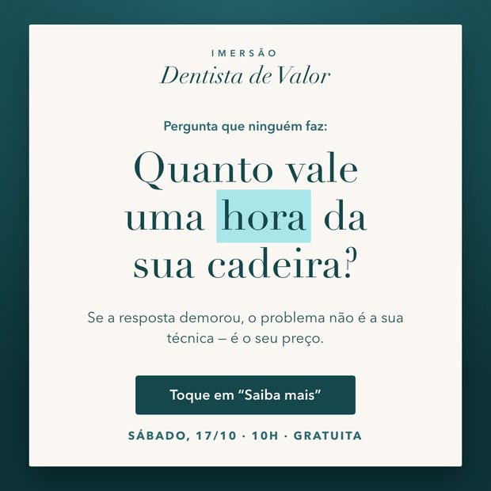
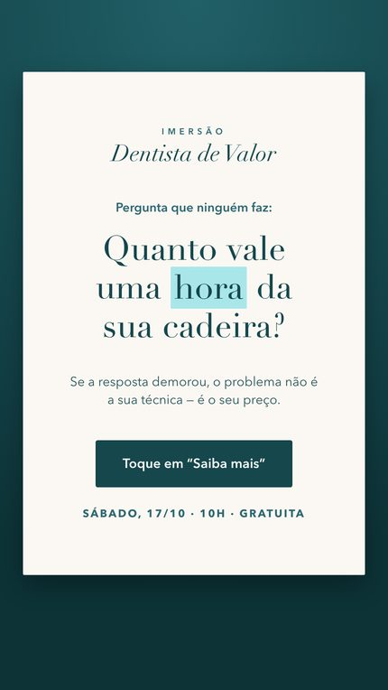
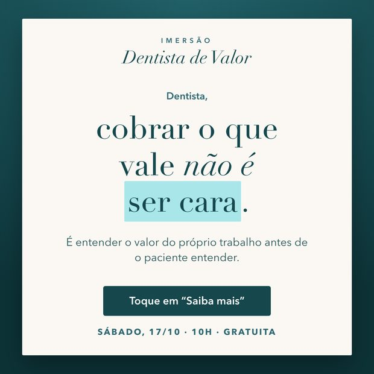
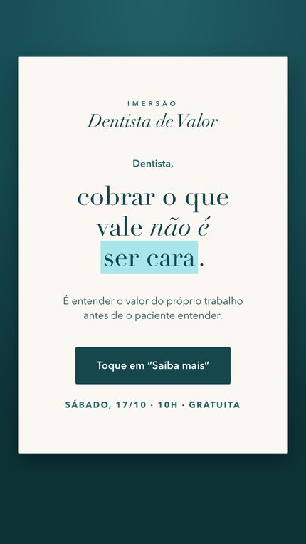
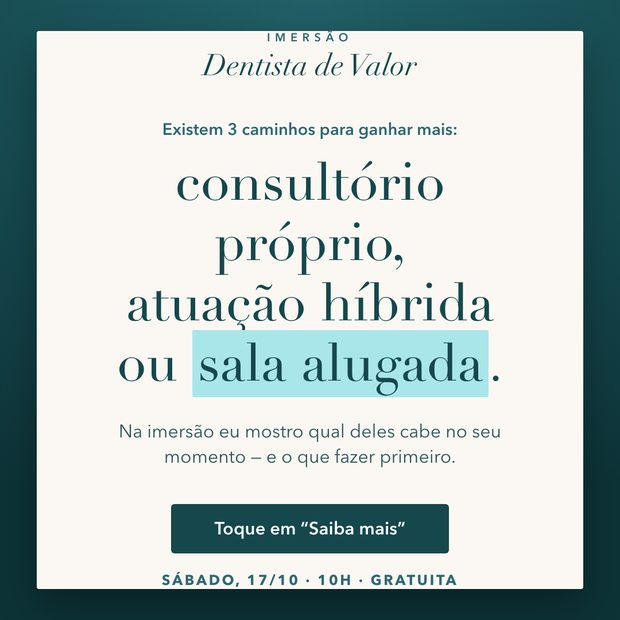
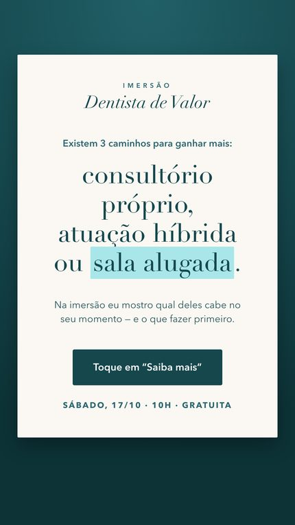
As peças de convite, para a reta final da captação — quando o que falta não é explicar o tema e sim marcar o dia. A arte 10 usa o frame em que a assinatura da imersão já aparece no próprio vídeo.
Participe da Imersão Dentista de Valor! ✨ Sábado, dia 17 de outubro, às 10h, 100% gratuito. Você vai descobrir os principais caminhos para ganhar mais, ser mais valorizada e construir uma carreira rentável e sustentável na odontologia 🦷 Toque agora em “Saiba Mais” e garanta sua vaga!
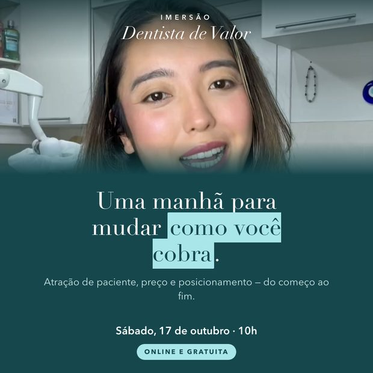
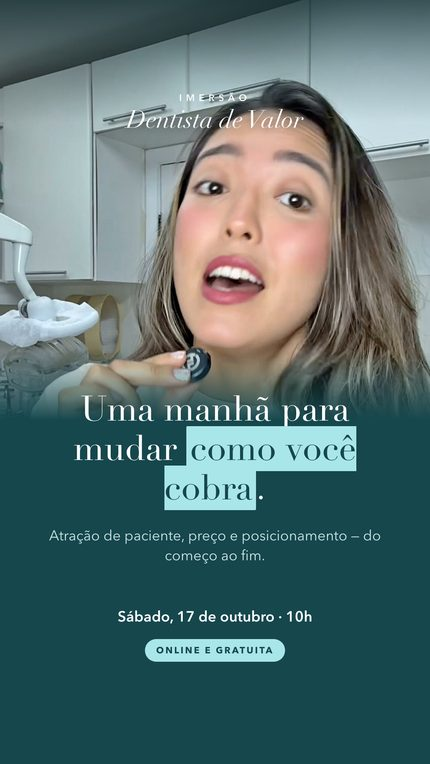
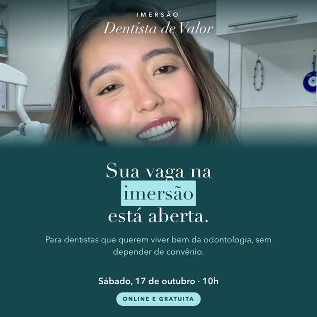
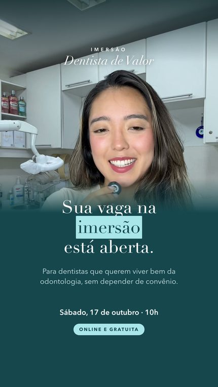